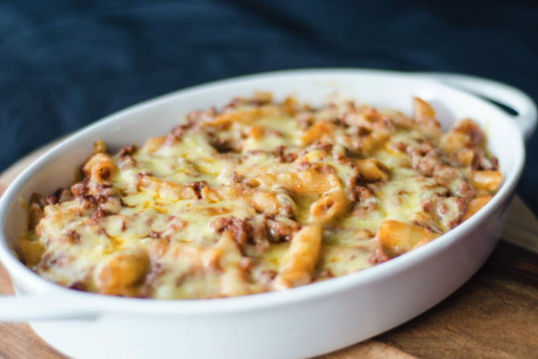
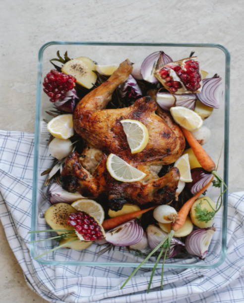
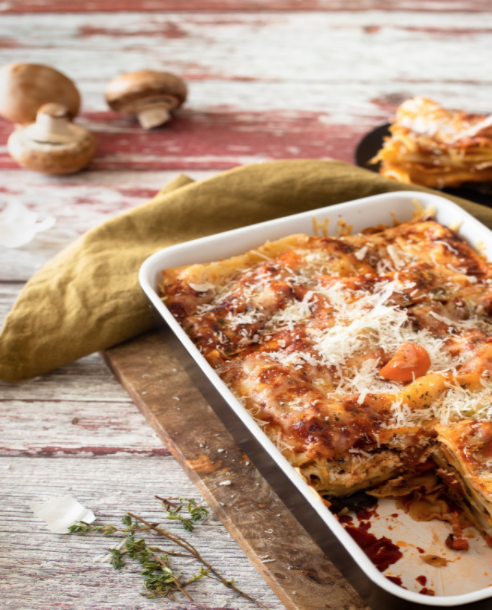

The Cooking Ranch
About
Recipes
Contact
Log-In
Farm To Table Fresh
Pan Seared Steak with Garlic Butter
This Pan-Seared Steak has a garlic rosemary-infused butter that makes it taste steakhouse quality. You’ll be impressed at how easy it is to make the perfect steak – seared and caramelized on the outside, and so juicy inside.
Shrimp Fettuccine Alfredo
Fettuccine alfredo is one of life's greatest comfort foods. It's creamy, cheesy, carb-y, and super super flavorful. We especially love this version because the shrimp adds lots of extra flavor and some lean protein to boot!
Avocado Tuna Sandwich
If you haven’t tried tuna salad made with avocado, you’re in for a lunchtime treat. The avocado gives it a healthy and eminently satisfying creaminess, while chopped celery, red onion, and red bell pepper add a delightful crunch.
Chicken Burger
These chicken burgers are juicy, moist, and flavorful! No more dry chicken, and you can have these burgers on the table in half an hour.
Chicken Fajitas
Chicken fajitas are an easy and flavorful weeknight meal. A classic Mexican recipe, juicy chicken is seasoned, seared and cooked to perfection, then tossed with sauteed bell peppers and onions.
Macaroni and Cheese
This baked mac and cheese is a family favorite recipe, loved by both children and adults. It uses a combination of cheeses, layered in the dish as well as melted into a rich and creamy cheese sauce, for the ultimate in cheesy deliciousness!

Cilantro Lime Chicken
Our crispy cilantro lime chicken recipe is full of incredible flavour! Juicy on the inside bone-in chicken thighs with a golden, crispy skin!

Turkey Casserole
Turkey casserole is a great way to use up some leftover turkey as well as any lingering veggies. The buttery crumb top is completely addicting and makes this our favorite casserole that we look forward to all year.

Chicken Tikka Masala
This rich and creamy flavoursome Chicken tikka rivals anybody else's! With aromatic golden chicken pieces swimming in an incredible curry sauce, this Chicken Tikka Masala recipe is one of the best you will try!
Garlic Butter Baked Salmon
This Garlic Butter Baked Salmon recipe makes tender, flaky salmon brushed with an incredible garlic butter sauce! This easy salmon recipe takes just a few minutes of prep and makes a perfect weeknight dinner idea.